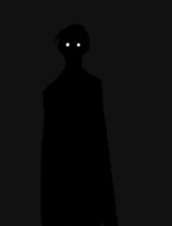

Чемпион

Никто🏆
Претендент - 🩸
▶ 2 место -
▶ 3 место -
▶ 4 место -
▶ 5 места -
▶ 6 места -
▶ 7 место -
▶ 8 место -
▶ 9 место -
▶ 10 место -
Правила
- Битву на рейтинг можно объявить только тому демону, который идет следующий в таблице рейтинга.
- КД для объявление битвы на рейтинг. Для обычных боев - КД 2 дня (вводим пока такое кд, как тестовое). Чемпионский бой - КД 5 дней.
- От битвы на рейтинг нельзя отказаться. Ответить на битву на рейтинг необходимо в течении 24-х часов (если после 24-х часов, вы не ответили на битву на рейтинг, вы получаете тех. поражение). В случае, если после ответа, в течении 48-ми часов вы не провели битву с оппонентом и игнорируете его, вы также получаете тех. поражение.
- Все бои должны происходить под присмотром Луны/Члена отряда Раншики/Инструктора демонов, иначе битва считаться недействительной.
- Демон может участвовать только в одной битве на рейтинг. (Пример: Демон, занимающий 3-е место в рейтинге, кинул битву на рейтинг демону, занимающего 2-е место в рейтинг. Получается, что демон, занимающий 4-е место в рейтинге, не может кинуть битву на рейтинг демону, занимающего 3-е место в рейтинге. Также демон, занимающий 2-е место в рейтинге, не может кинуть битву на рейтинг демону занимающего 1-е место).
- В битвах на рейтинг не могут участвовать владельцы отрядов и луны
- Запрещена фальсификация итогов битвы
Демон, который занимает позицию Чемпиона временно получает следующие улучшения:
- Роль в дискорде
- Приписка VIC на сервере
- Титул чемпиона на сайте демонов
- Понижение КД на повышение на 1 день
- Высокое место в иерархии
- Возможность получить личную комнату в цитадели (комната согласуется с Мудзаном)
- Возможность запросить первородную кровь раз в неделю (30 ПК)
- Подчиняется только лунам и выше.
Исход битвы на рейтинг:
В случае, если Чемпион проигрывает битву на рейтинг, он опускается в самый низ таблицы рейтинга, претендент занимает позицию Чемпиона, и весь рейтинг сдвигается на 1 место выше.
Демоны победители поднимаются на одну ступень выше, проигравшие занимают их место. (Пример: Демон, занимающий 3-е место в рейтинге, кинул битву на рейтинг демону, занимающего 2-е место в рейтинг. Демон, занимающий 3-е место в рейтинге победил в битве, значит он занимает 2-е место в рейтинге, а проигравший демон опускается на 3-е место.)
Для объявления битвы на рейтинг используется канал ║│💀│битва-крови
После каждой битвы, смотрящий за битвой (Луна/Член отряда Раншики/Инструктор демонов) должен отписать об исходе битвы в канал ║🔻🔺рейтинговая